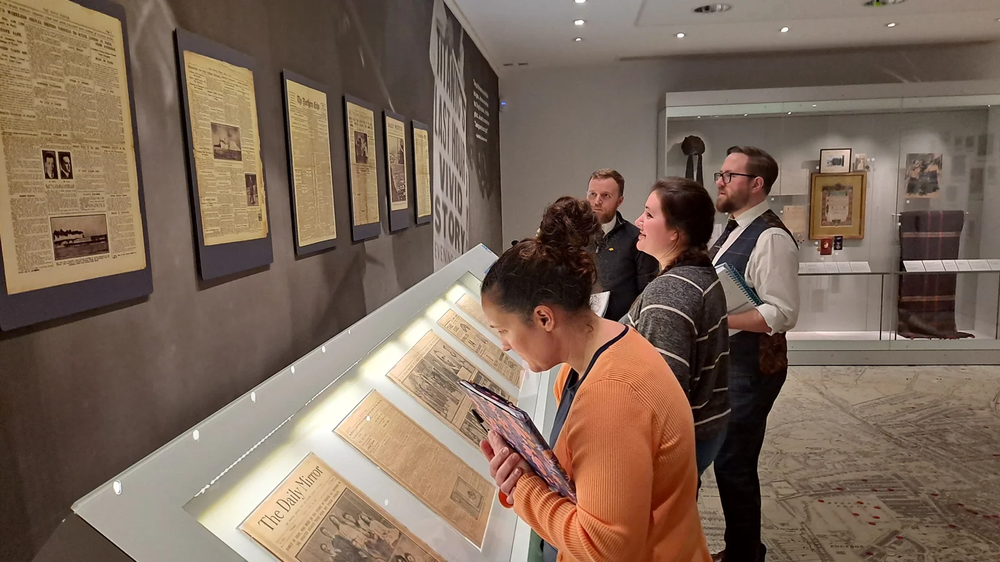

Ideas take shape
together.
Three workshops in 2023 brought teachers, researchers and museum educators together to develop the Titanic unit.
22 February 2023
SeaCity Museum
SeaCity Museum
Workshop 1
Finding connections
Exploring why and how to integrate science and history, connecting formal and informal learning, touring Southampton’s Titanic Story and developing initial lesson ideas.
Workshop 1 presentation PDF · 3.2 MB
15 May 2023
Boldrewood Campus
Boldrewood Campus
Workshop 2
From place to curriculum
Considering curriculum design, place and community-based learning, and disaster education. Teachers developed a scheme of work with cross-subject objectives and opportunities to use museum resources.
Workshop 2 presentation PDF · 1.4 MB29 June 2023
Avenue Campus
Avenue Campus
Workshop 3
Making the lessons
Developing lesson plans and materials, exchanging feedback, reflecting on the process and discussing how to share the resulting unit.
Remote collaboration continued from July to September 2023 to collate the teaching materials.
Explore the completed unit